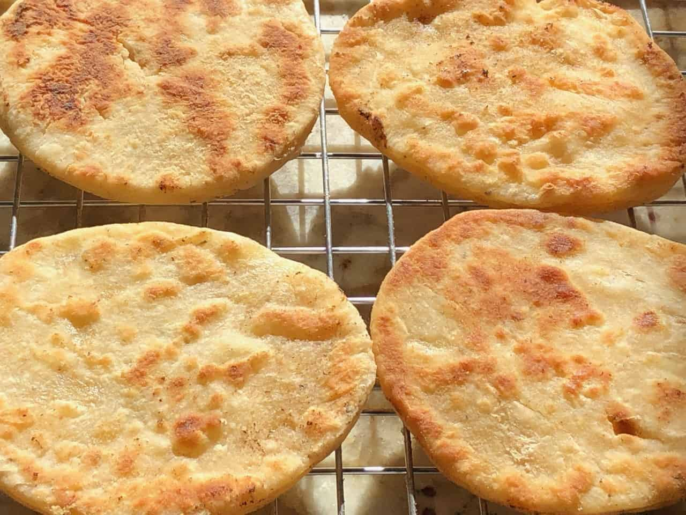

ö l ä n d i s h f r y i n g p a n b r e a d

ingredients
- 2 dl milk
- 1 teaspoon salt
- 5 dl wheat flour
- 25 g yeast
steps
- mix all ingredients and knead the dough.
- split the dough into 10 pieces.
- roll out the dough with a crispbread rolling pin.
- bake without any fat on a frying pan over open embers or on an outdoors grill, about 1.5 minutes on each side.
- yeast is not really necessary.
- flour and water is sufficient.
- you can use whatever flour you prefer (barley, wheat, rye) and mix it in a bowl with water, but only as much water for it to become a workable dough.
- these bread cakes can also be made on heated stones, directly on a hotplate or in a frying pan.
back